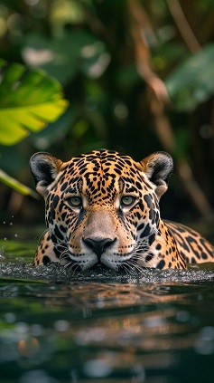
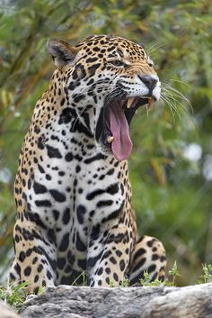
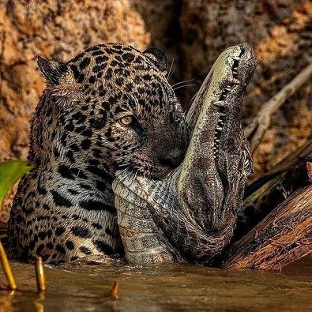
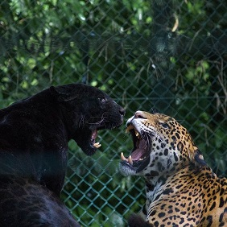
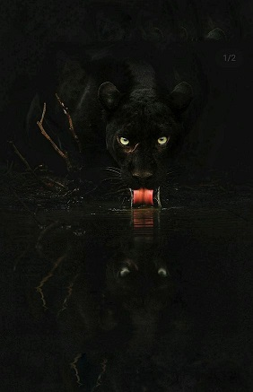

Overview
The jaguar (Panthera onca) is a large feline species and the only extant member of the genus Panthera native to the Americas.
Jaguars are known for their powerful build, which is necessary for their hunting style.
They have the strongest bite of all big cats, capable of piercing the shells of reptiles and the skulls of their prey
Reproduction:
Gestation Period: Approximately 90-110 days.
Litter Size: Typically 1-4 cubs.
Cub Development: Cubs stay with their mother for about 2 years before becoming independent.
Conservation Status: Jaguars are listed as Near Threatened on the IUCN Red List. Their population is declining due to habitat loss, human-wildlife conflict, and poaching.
Cultural Significance: Jaguars have been an important cultural symbol for many indigenous cultures in the Americas, often associated with power, grace, and mystery.
Fun Facts
Jaguars are excellent swimmers and often live near water.
They have the strongest bite force of any big cat, capable of crushing the skulls of their prey.
Unlike most big cats, jaguars often kill their prey by biting directly through the skull with their powerful jaws.
Habitat
Jaguars are primarily found in rainforests in the Amazon basin.They can also be found in swamps, grasslands, and even scrublands.
Their habitats are characterized by dense cover and a water source, as jaguars are excellent swimmers.
They also inhabit other forested regions, swamps, and open terrains such as grasslands and scrublands.
Physical Characteristics:
Size: Jaguars are the largest cats in the Americas and the third-largest in the world after tigers and lions.
They can weigh between 100 to 250 pounds.
Color: Their fur is typically a tawny yellow but can range from reddish-brown to black.
They have distinctive rosette patterns (small, closed circles) on their fur.
Build: Jaguars have a stocky, muscular build with short but powerful limbs and a broad head.
Diet
Jaguars are carnivorous and have a diverse diet that includes over 85 species.
They prefer large prey such as deer, peccaries, capybaras, and tapirs but will also hunt smaller animals, fish, and birds.
Jaguars are solitary hunters and use stealth and strength to catch their prey.
Diet: Jaguars are carnivorous and known for their strong hunting abilities.
They primarily prey on mammals such as deer, capybaras, and caimans. They are also capable of eating birds, fish, and reptiles.
Behavior
Jaguars are solitary animals, and they establish territories that are marked and defended.
They are known for their elusive nature and tend to be more active during dawn and dusk.
Jaguars communicate through vocalizations, scent markings, and visual signals.
Behavior:
Solitary: Jaguars are generally solitary animals, except during mating season or when a mother is with her cubs.
Territorial: They are very territorial and mark their territory with urine or scratch marks.
Nocturnal: Jaguars are primarily nocturnal hunters but can also be active during the day.
Conservation
Jaguars are currently listed as Near Threatened on the IUCN Red List. Their population is decreasing due to habitat loss, poaching, and conflict with humans.
Conservation efforts include habitat preservation, anti-poaching measures, and awareness campaigns to protect these magnificent animals.
Conservation Status
Current status on the IUCN Red List (Near Threatened).
Major threats to jaguar populations (habitat loss, poaching, human-wildlife conflict).
Conservation efforts and organizations working to protect jaguars.
Cultural Significance
Importance of jaguars in indigenous cultures and mythology.
Symbolism and representation of jaguars in art and folklore.
Adaptations and Survival Skills
Physical adaptations that help jaguars survive in their environment (e.g., strong jaws, swimming ability).
Behavioral adaptations (e.g., nocturnal habits, climbing skills).
Jaguar Research and Technology
Methods scientists use to study jaguars (camera traps, GPS collars).
Recent discoveries and ongoing research projects.
Jaguars in the Modern World
How jaguars are affected by modern development and climate change.
The role of ecotourism in jaguar conservation.
Ways people can help protect jaguars and their habitats.